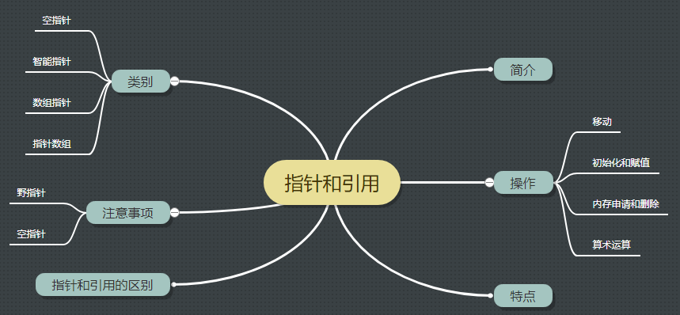

<!DOCTYPE HTML>
<html lang="zh-CN">
<head><meta name="generator" content="Hexo 3.8.0">
    <!--Setting-->
    <meta charset="UTF-8">
    <meta name="viewport" content="width=device-width, user-scalable=no, initial-scale=1.0, maximum-scale=1.0, minimum-scale=1.0">
    <meta http-equiv="X-UA-Compatible" content="IE=Edge,chrome=1">
    <meta http-equiv="Cache-Control" content="no-siteapp">
    <meta http-equiv="Cache-Control" content="no-transform">
    <meta name="renderer" content="webkit|ie-comp|ie-stand">
    <meta name="apple-mobile-web-app-capable" content="我的博客 - blog">
    <meta name="apple-mobile-web-app-status-bar-style" content="black">
    <meta name="format-detection" content="telephone=no,email=no,adress=no">
    <meta name="browsermode" content="application">
    <meta name="screen-orientation" content="portrait">
    <link rel="dns-prefetch" href="https://lives.xtcgch.ink">
    <!--SEO-->

<meta name="description" content="脑容量不够，笔记来凑">


<meta name="robots" content="all">
<meta name="google" content="all">
<meta name="googlebot" content="all">
<meta name="verify" content="all">
    <!--Title-->


<title>【原理】指针和引用 | 我的博客 - blog</title>


    <link rel="alternate" href="/atom.xml" title="我的博客 - blog" type="application/atom+xml">


    <link rel="icon" href="https://blog.xtcgch.ink/img/background/海绵宝宝.ico">

    


<link rel="stylesheet" href="/css/bootstrap.min.css?rev=3.3.7">
<link rel="stylesheet" href="/css/font-awesome.min.css?rev=4.5.0">
<link rel="stylesheet" href="/css/style.css?rev=@@hash">


    


    

</head>

</html>
<!--[if lte IE 8]>
<style>
    html{ font-size: 1em }
</style>
<![endif]-->
<!--[if lte IE 9]>
<div style="ie">你使用的浏览器版本过低，为了你更好的阅读体验，请更新浏览器的版本或者使用其他现代浏览器，比如Chrome、Firefox、Safari等。</div>
<![endif]-->

<body>
    <header class="main-header" style="background-image:url(https://blog.xtcgch.ink/img/head-bg.jpg)">
    <div class="main-header-box">
        <a class="header-avatar" href="/" title="unistd68">
            
        </a>
        <div class="branding">
        	<!--<h2 class="text-hide">Snippet主题,从未如此简单有趣</h2>-->
            
                <h2> 脑容量不够，笔记来凑 </h2>
            
    	</div>
    </div>
</header>
    <nav class="main-navigation">
    <div class="container">
        <div class="row">
            <div class="col-sm-12">
                <div class="navbar-header"><span class="nav-toggle-button collapsed pull-right" data-toggle="collapse" data-target="#main-menu" id="mnav">
                    <span class="sr-only"></span>
                        <i class="fa fa-bars"></i>
                    </span>
                    <a class="navbar-brand" href="https://lives.xtcgch.ink">我的博客 - blog</a>
                </div>
                <div class="collapse navbar-collapse" id="main-menu">
                    <ul class="menu">
                        
                            <li role="presentation" class="text-center">
                                <a href="https://blog.xtcgch.ink/"><i class="fa "></i>主页</a>
                            </li>
                        
                            <li role="presentation" class="text-center">
                                <a href="https://blog.xtcgch.ink/categories/原理/"><i class="fa "></i>原理</a>
                            </li>
                        
                            <li role="presentation" class="text-center">
                                <a href="https://blog.xtcgch.ink/categories/代码/"><i class="fa "></i>代码</a>
                            </li>
                        
                            <li role="presentation" class="text-center">
                                <a href="https://blog.xtcgch.ink/categories/开源/"><i class="fa "></i>开源</a>
                            </li>
                        
                            <li role="presentation" class="text-center">
                                <a href="https://blog.xtcgch.ink/categories/面试/"><i class="fa "></i>面试</a>
                            </li>
                        
                            <li role="presentation" class="text-center">
                                <a href="https://blog.xtcgch.ink/categories/其他/"><i class="fa "></i>其他</a>
                            </li>
                        
                            <li role="presentation" class="text-center">
                                <a href="https://blog.xtcgch.ink/archives/"><i class="fa "></i>时间轴</a>
                            </li>
                        
                    </ul>
                </div>
            </div>
        </div>
    </div>
</nav>
    <section class="content-wrap">
        <div class="container">
            <div class="row">
                <main class="col-md-8 main-content m-post">
                    <p id="process"></p>
<article class="post">
    <div class="post-head">
        <h1 id="【原理】指针和引用">
            
	            【原理】指针和引用
            
        </h1>
        <div class="post-meta">
    
    
    <span class="categories-meta fa-wrap">
        <i class="fa fa-folder-open-o"></i>
        <a href="https://blog.xtcgch.ink/categories/原理">
            原理
        </a>
    </span>
    

    
    <span class="fa-wrap">
        <i class="fa fa-tags"></i>
        <span class="tags-meta">
            
                
                    <a href="https://blog.xtcgch.ink/tags/指针" title="指针">
                        指针
                    </a>
                
                    <a href="https://blog.xtcgch.ink/tags/引用" title="引用">
                        引用
                    </a>
                
                    <a href="https://blog.xtcgch.ink/tags/C++" title="C++">
                        C++
                    </a>
                
            
        </span>
    </span>
    

    
        
        <span class="fa-wrap">
            <i class="fa fa-clock-o"></i>
            <span class="date-meta">2018/11/23</span>
        </span>
        
    
</div>

            
            
            <p class="fa fa-exclamation-triangle warning">
                本文于<strong>1043</strong>天之前发表，文中内容可能已经过时。
            </p>
        
    </div>
    
    <div class="post-body post-content">
        <p><strong>摘要</strong>：本文主要讲C++中指针相关的知识点。</p>
<a id="more"></a>
<hr>
<h2 id="1、脑图"><a href="#1、脑图" class="headerlink" title="1、脑图"></a>1、脑图</h2><p></p>
<hr>
<h2 id="2、概述"><a href="#2、概述" class="headerlink" title="2、概述"></a>2、概述</h2><hr>
<h2 id="3、特点"><a href="#3、特点" class="headerlink" title="3、特点"></a>3、特点</h2><p>（1）指针</p>
<p>（2）引用</p>
<hr>
<h2 id="4、指针类别"><a href="#4、指针类别" class="headerlink" title="4、指针类别"></a>4、指针类别</h2><h3 id="4-1-空指针"><a href="#4-1-空指针" class="headerlink" title="4.1 空指针"></a>4.1 空指针</h3><ul>
<li>在C++11之前，使用0或者NULL来赋予空指针</li>
<li>在C++11之后，使用nullptr来赋予空指针</li>
</ul>
<h3 id="4-2-智能指针"><a href="#4-2-智能指针" class="headerlink" title="4.2 智能指针"></a>4.2 智能指针</h3><p>1、简介：<br>（1）头文件<memory><br>（2）在C++11标准后才正式可用</memory></p>
<p><strong>2、shared_ptr&lt;&gt;()</strong><br>（1）特点</p>
<ul>
<li>引用计数，复制时只是复制指针，当计数为0时，调用元素的析构函数<br>（2）初始化：使用make_shared&lt;&gt;()进行构造智能指针<br>（3）复制：<br>（4）注意事项：</li>
</ul>
<p><strong>3、unique_ptr&lt;&gt;()</strong><br>（1）特点</p>
<ul>
<li>unique_ptr只能有一个使用权，不同的unique_ptr之间只能进行move转移使用权<br>（2）初始化：使用make_unique&lt;&gt;()进行构造只能指针<br>（3）复制：<br>（4）注意事项：</li>
</ul>
<p><strong>4、weak_ptr&lt;&gt;()</strong><br>（1）特点</p>
<ul>
<li>unique_ptr只能有一个使用权，不同的unique_ptr之间只能进行move转移使用权<br>（2）初始化：使用make_unique&lt;&gt;()进行构造只能指针<br>（3）复制：<br>（4）注意事项：</li>
</ul>
<h3 id="4-3-数组指针"><a href="#4-3-数组指针" class="headerlink" title="4.3 数组指针"></a>4.3 数组指针</h3><p>1、简介<br>本质是一个指针，指向一个数组</p>
<p>2、声明和定义<br>int (* p)[10];</p>
<ul>
<li>p、* p++、p[1]</li>
</ul>
<p>3、删除<br>delete[]</p>
<p>4、例子<br><figure class="highlight plain"><table><tr><td class="gutter"><pre><span class="line">1</span><br><span class="line">2</span><br><span class="line">3</span><br><span class="line">4</span><br></pre></td><td class="code"><pre><span class="line">int a[3][4];</span><br><span class="line">int (* p)[4]; //该语句是定义一个数组指针，指向含4个元素的一维数组。</span><br><span class="line"> p=a;        //将该二维数组的首地址赋给p，也就是a[0]或&amp;a[0][0]</span><br><span class="line"> p++;       //该语句执行过后，也就是p=p+1;p跨过行a[0][]指向了行a[1][]</span><br></pre></td></tr></table></figure></p>
<h3 id="4-4-指针数组"><a href="#4-4-指针数组" class="headerlink" title="4.4 指针数组"></a>4.4 指针数组</h3><p>1、简介<br>本质是一个数组，存放的都是指针</p>
<p>2、声明和定义<br>int * (p[])</p>
<p>3、删除<br>delete[] p</p>
<p>4、例子<br>int <em> p[3];<br>int a[3][4];<br>p++; //该语句表示p数组指向下一个数组元素。注：此数组每一个元素都是一个指针<br>for(i=0;i&lt;3;i++)<br>p[i]=a[i]<br>这里int </em> p[3] 表示一个一维数组内存放着三个指针变量，分别是p[0]、p[1]、p[2]<br>所以要分别赋值。<br>比如要表示数组中i行j列一个元素：</p>
<ul>
<li>(p[i]+j)、<em> (</em> (p+i)+j)、(* (p+i))[j]、p[i][j]</li>
</ul>
<hr>
<h2 id="5、指针操作"><a href="#5、指针操作" class="headerlink" title="5、指针操作"></a>5、指针操作</h2><h3 id="5-1-移动"><a href="#5-1-移动" class="headerlink" title="5.1 移动"></a>5.1 移动</h3><p>当指针为数组指针时，有2种移动指针的方法，一种是使用加法：p+=n，一种是使用下标：p[n]。</p>
<h3 id="5-2-初始化和赋值"><a href="#5-2-初始化和赋值" class="headerlink" title="5.2 初始化和赋值"></a>5.2 初始化和赋值</h3><p>（1）可以使用zeromemory()和memset()函数来进行指针初始化。<br>（2）可以使用memcpy()函数来进行数组指针的赋值。</p>
<h3 id="5-3-内存申请和删除"><a href="#5-3-内存申请和删除" class="headerlink" title="5.3 内存申请和删除"></a>5.3 内存申请和删除</h3><p>（1）使用new进行申请内存，通过判断p是否为空指针来知晓是否申请内存成功<br>（2）new申请的内存：</p>
<ul>
<li>指针指向单个对象时，使用delete进行删除</li>
<li>指针指向数组时，使用delete[]进行删除</li>
</ul>
<hr>
<h2 id="6、指针和引用的区别"><a href="#6、指针和引用的区别" class="headerlink" title="6、指针和引用的区别"></a>6、指针和引用的区别</h2><ul>
<li>定义和性质区别：</li>
</ul>
<p>（1）指针是一个变量，只不过这个变量存储的是一个地址，指向内存的一个存储单元;</p>
<p>而引用跟原来的变量实质上是同一个东西，只不过是原变量的一个别名而已</p>
<p>（2）可以有const指针，但是没有const引用</p>
<p>（3）指针可以有多级，但是引用只能是一级（int ** p；合法 而 int &amp;&amp;a是不合法的）</p>
<p>（4）指针的值可以为空，但是引用的值不能为NULL，并且引用在定义的时候必须初始化</p>
<p>(5)指针的值在初始化后可以改变，即指向其它的存储单元，而引用在进行初始化后就不会再改变了</p>
<p>(6)”sizeof引用”得到的是所指向的变量(对象)的大小，而”sizeof指针”得到的是指针本身的大小</p>
<p>(7)指针和引用的自增(++)运算意义不一样</p>
<ul>
<li>作为函数参数进行传递时的区别</li>
</ul>
<p>指针传递的是一个副本，引用传递的是本身</p>
<hr>
<h2 id="7、注意事项"><a href="#7、注意事项" class="headerlink" title="7、注意事项"></a>7、注意事项</h2><p>（1）空指针</p>
<ul>
<li>使用时需要先判断是否为空指针，方法有if(nullptr==p)或者assert(nullptr==p)</li>
<li>如果指针指向了一块堆内的内存，如果在未删除内存时把指针设为空指针，则造成了内存泄漏</li>
</ul>
<p>（2）野指针</p>
<ul>
<li>造成原因：删除指针指向的内存后，未给指针赋空值，所以原指针指向了一个不确定的内存</li>
<li>解决方案：删除指针指向的内存后，使用nullptr赋值为空指针</li>
</ul>

    </div>
    
    <div class="post-footer">
        <div>
            
        </div>
        <div>
            
        </div>
    </div>
</article>

<div class="article-nav prev-next-wrap clearfix">
    
        <a href="/2018/11/24/mysql-install/" class="pre-post btn btn-default" title="【原理】CentOS6-7安装MYSQL数据库">
            <i class="fa fa-angle-left fa-fw"></i><span class="hidden-lg">上一篇</span>
            <span class="hidden-xs">【原理】CentOS6-7安装MYSQL数据库</span>
        </a>
    
    
        <a href="/2018/11/23/database/" class="next-post btn btn-default" title="【原理】数据库知识">
            <span class="hidden-lg">下一篇</span>
            <span class="hidden-xs">【原理】数据库知识</span><i class="fa fa-angle-right fa-fw"></i>
        </a>
    
</div>


    <div id="comments">
        
    
    <div id="vcomments" class="valine"></div>
    <script src="//cdn1.lncld.net/static/js/3.0.4/av-min.js"></script>
<script src="/assets/valine.min.js"></script>

    <script>
        new Valine({
            av: AV,
            el: '#vcomments',
            appId: 'XWA5gq7VCJybw7YQhf5HG20r-gzGzoHsz',
            appKey: '8FW1WEwrysHXaUD1bhGn2Rp8',
            placeholder: '说点什么吧',
            notify: true,
            verify: false,
            avatar: 'https://blog.xtcgch.ink/img/comment-avatar.jpg',
            meta: 'nick,mail'.split(','),
            pageSize: '10',
            path: window.location.pathname,
            lang: 'zh-CN'.toLowerCase()
        })
    </script>


    </div>


                </main>
                
                    <aside id="article-toc" role="navigation" class="col-md-4">
    <div class="widget">
        <h3 class="title">文章目录</h3>
        
            <ol class="toc"><li class="toc-item toc-level-2"><a class="toc-link" href="#1、脑图"><span class="toc-text">1、脑图</span></a></li><li class="toc-item toc-level-2"><a class="toc-link" href="#2、概述"><span class="toc-text">2、概述</span></a></li><li class="toc-item toc-level-2"><a class="toc-link" href="#3、特点"><span class="toc-text">3、特点</span></a></li><li class="toc-item toc-level-2"><a class="toc-link" href="#4、指针类别"><span class="toc-text">4、指针类别</span></a><ol class="toc-child"><li class="toc-item toc-level-3"><a class="toc-link" href="#4-1-空指针"><span class="toc-text">4.1 空指针</span></a></li><li class="toc-item toc-level-3"><a class="toc-link" href="#4-2-智能指针"><span class="toc-text">4.2 智能指针</span></a></li><li class="toc-item toc-level-3"><a class="toc-link" href="#4-3-数组指针"><span class="toc-text">4.3 数组指针</span></a></li><li class="toc-item toc-level-3"><a class="toc-link" href="#4-4-指针数组"><span class="toc-text">4.4 指针数组</span></a></li></ol></li><li class="toc-item toc-level-2"><a class="toc-link" href="#5、指针操作"><span class="toc-text">5、指针操作</span></a><ol class="toc-child"><li class="toc-item toc-level-3"><a class="toc-link" href="#5-1-移动"><span class="toc-text">5.1 移动</span></a></li><li class="toc-item toc-level-3"><a class="toc-link" href="#5-2-初始化和赋值"><span class="toc-text">5.2 初始化和赋值</span></a></li><li class="toc-item toc-level-3"><a class="toc-link" href="#5-3-内存申请和删除"><span class="toc-text">5.3 内存申请和删除</span></a></li></ol></li><li class="toc-item toc-level-2"><a class="toc-link" href="#6、指针和引用的区别"><span class="toc-text">6、指针和引用的区别</span></a></li><li class="toc-item toc-level-2"><a class="toc-link" href="#7、注意事项"><span class="toc-text">7、注意事项</span></a></li></ol>
        
    </div>
</aside>

                
            </div>
        </div>
    </section>
    <footer class="main-footer">
    <div class="container">
        <div class="row">
        </div>
    </div>
</footer>

<a id="back-to-top" class="icon-btn hide">
	<i class="fa fa-chevron-up"></i>
</a>


    <div class="copyright">
    <div class="container">
        <div class="row">
            <div class="col-sm-12">
                <div class="busuanzi">
    
</div>

            </div>
            <div class="col-sm-12">
                <span>Copyright &copy; 2018
                </span> |
                <span>
                    Powered by <a href="//hexo.io" class="copyright-links" target="_blank" rel="nofollow">Hexo</a>
                </span> |
                <span>
                    Theme by <a href="//github.com/shenliyang/hexo-theme-snippet.git" class="copyright-links" target="_blank" rel="nofollow">Snippet</a>
                </span>
            </div>
        </div>
    </div>
</div>


<script src="/js/app.js?rev=@@hash"></script>

</body>
</html>